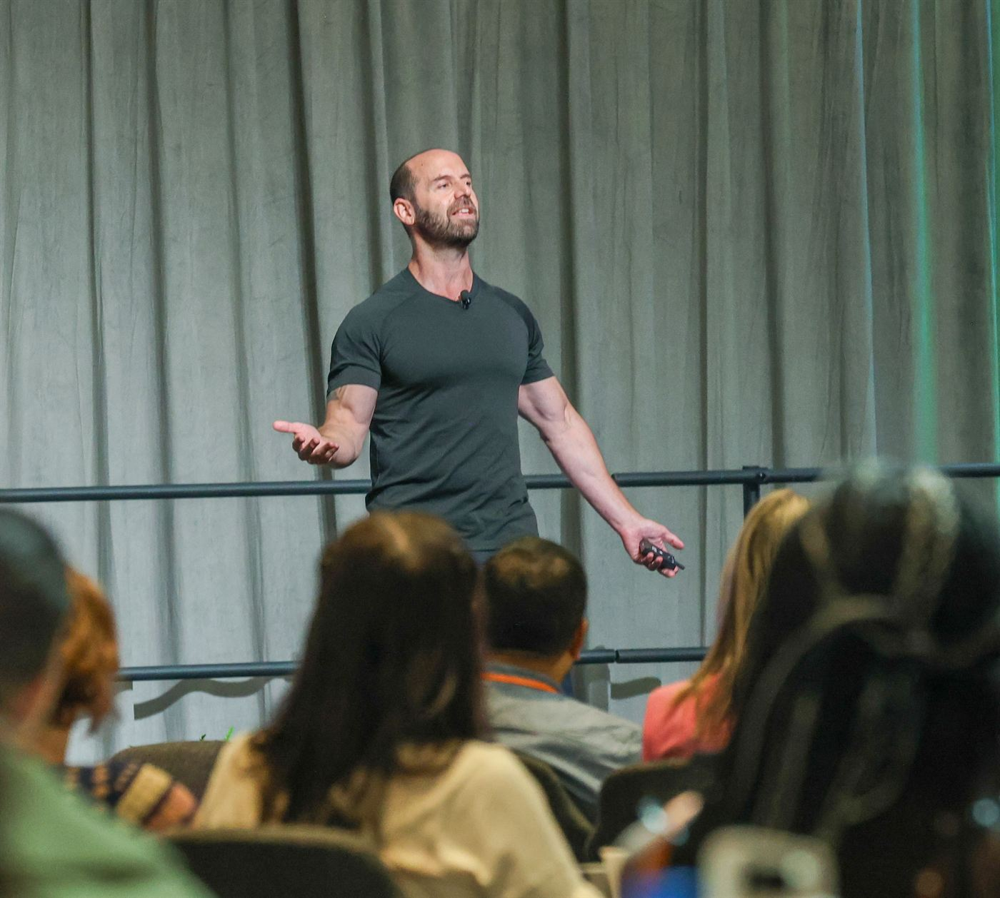
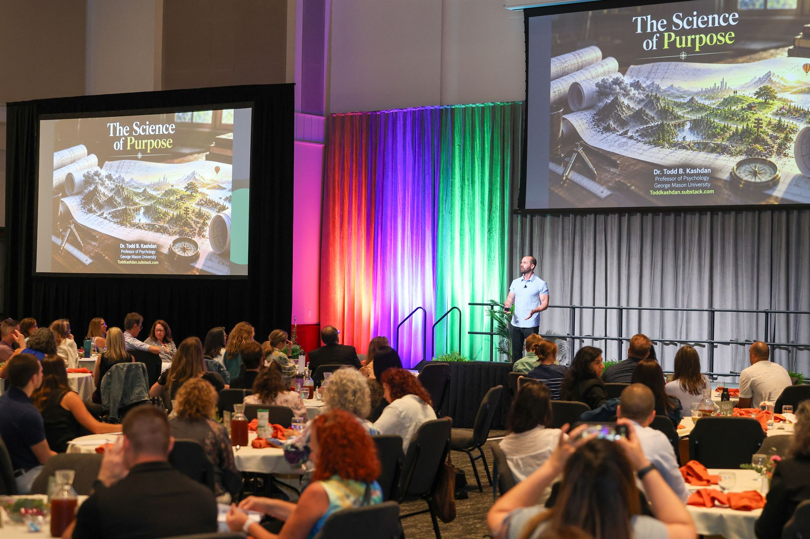
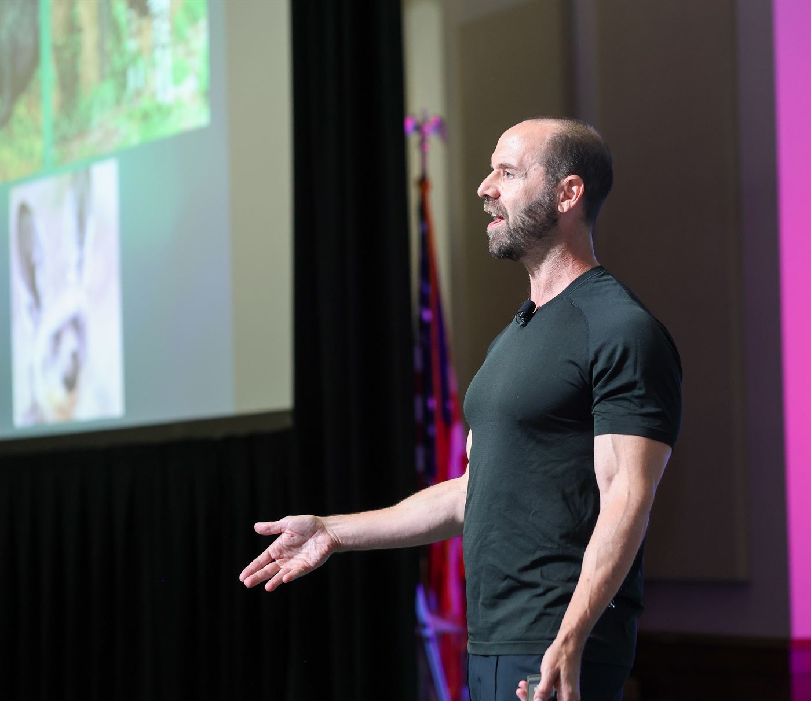

Helping people build a life with more purpose and curiosity.
Psychologist Todd Kashdan has led the Well-Being Lab at George Mason University for more than 20 years and published over 250 scientific articles. He turns that research into books, talks, and a weekly newsletter.


Purpose is a central, self-organizing life aim.
It gives your days direction and helps you decide what to say yes to, especially when life gets hard. Our research breaks it into three parts you can measure and build.
New psychological insights

Talks people keep thinking about.
Keynotes and hands-on workshops on curiosity, purpose, and performance. Clients include Microsoft, BBDO, Mercedes-Benz, the World Bank, Lululemon, and the U.S. Armed Forces.
Todd Kashdan was perfect. What he said was inspirational, useful, and entertaining.
Andrew RobertsonCEO, BBDO WorldwideProvoked with Dr. Todd Kashdan
Psychologically sharp, evidence-based ideas that challenge conventional wisdom about purpose, curiosity, work, relationships, and the strange ways people behave.
Over 10,000 subscribers
By subscribing you agree to Substack’s Terms of Use and Privacy Policy.